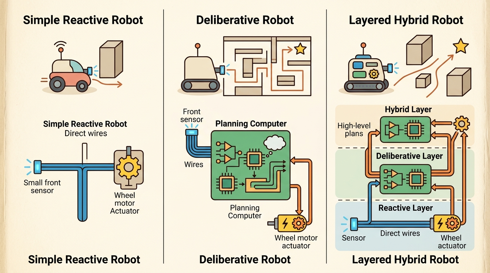

"The fast channel catches you before you fall. The slow channel decides whether the destination was worth going to at all."
A Reflex Arc and Its Supervisor, Briefly in Agreement

This section builds directly on the reactive/deliberative contrast developed in section 3.5; readers who skipped that section should review it before working through the routing rule here. The dual-system split introduced below is extended in section 3.7, which places Large Language Models (LLMs), Vision-Language Models (VLMs), and Vision-Language-Action models (VLAs) into the slow-path role of the same architectural stack. The uncertainty and risk scoring that drives the router reappears in depth in section 53.2, where conformal prediction and ensemble calibration are treated as first-class design tools.
A robot arm sweeps a cup off a table before its planning module has even finished parsing the scene. Half a second later, a language model finishes deliberating and authorizes a correction that arrives too late. That latency gap is the central engineering problem of embodied AI in 2024: fast reflexes misfire; slow planners lag. Dual-system architectures resolve the tension by routing each decision to whichever pathway fits its urgency and complexity. By the end of this section you will be able to specify the router, set its thresholds, and trace a concrete action from sensor input through both pathways to a closed-loop outcome.
Your hand is already moving toward the falling glass before you have consciously decided to catch it; only afterward does the slow part of your mind ask whether the glass was even worth saving, the exact tension Figure 3.6A dramatizes. Embodied robots face the same split second by second, and the contract that governs which decisions go to the fast hand and which to the slow mind is what this section makes precise. Figure 3.6 shows the closed-loop shape we are after: evidence flows into a decision, the decision produces a consequence, and that consequence becomes the next observation, with a router deciding whether each case takes the fast or the slow path.
The key question in Dual-system (System 1 / System 2) designs and where they come from is practical: what must the agent know, what can it observe, what action is available, and what evidence shows that the action worked under the stated conditions?
A representation earns its place when it changes the measurable action interface. In dual-system (system 1 / system 2) designs and where they come from, the reader should keep asking which decision becomes easier, safer, or more reliable.
Theory
The practical design rule for a dual-system stack is to make the seam between the two paths inspectable before tuning anything. On a Unitree Go2 quadruped, for example, log the exact bytes crossing the boundary. The MPC path emits a 12-dimensional ground-reaction-force vector at 1 kHz. The high-level navigation path emits a body-velocity command at 10 Hz. A useful artifact records both with timestamps, the SI units (newtons, m/s), the actuator torque limits (about 23.7 Nm per joint), and a termination label (fell, reached goal, timed out). When that handoff is visible, a stale-frame torque spike is a two-line diff in a ROS 2 bag; when it hides inside a monolithic policy, the same bug becomes a multi-day mystery.
Dual-system designs borrow a useful distinction from cognitive science, but in embodied AI the distinction must become an engineering contract. "System 1" means a fast, learned, habitual, or reflexive path that can act under tight latency. "System 2" means a slower path that spends extra computation on planning, checking, search, tool use, or explanation before action.
Consider a specific case. Boston Dynamics' Atlas uses low-level whole-body controllers (System 1) running at 500 Hz for balance and joint torque. A separate planning layer (System 2) operating at 5-10 Hz decides foothold sequences on uneven terrain. The timing gap is stark: System 1 closes its loop in 2 ms; System 2 takes 100-200 ms. If you replaced the fast controller with the planning layer, the robot would fall before the first deliberation finished. Google DeepMind's RT-2 (Brohan et al., 2023) follows a similar split. A vision-language model deliberates over the task instruction and scene, then emits a coarse action token that a faster low-level controller converts to joint commands at servo rate. Neither path can substitute for the other: swapping in the slow path destabilizes the control loop, and swapping in the fast path leaves the system with no model of novel objects or instructions. The split also shapes learning. In illustrative training setups of this kind, a whole-body controller can converge in on the order of a few hundred simulation episodes when a fast reflex layer handles balance separately, whereas training with only the slow planner in the loop typically fails to produce a standing policy at all within a much larger episode budget, because the planner is too slow to catch the first perturbation. The exact episode counts are setup-specific and are reported here as an order-of-magnitude illustration, not a benchmark result.
A fast path that cannot think and a slow path that cannot react are not rivals: they are two halves of one controller, and the router is the seam that holds them together.
The routing rule is the core design choice. A simple version is:
Before writing the rule down, it helps to see why it needs two inputs rather than one, because that choice shapes every threshold that follows.
Why uncertainty and risk stay on separate axes
Uncertainty and risk are kept as separate axes because they cause different physical consequences on a real robot. High uncertainty means the fast path's learned policy is extrapolating beyond its training distribution; acting on a bad prediction can damage the end-effector or destabilize a contact. High risk means even a correct action carries large downstream cost, such as a grasp that is near a fragile object. A policy can be certain yet risky, or uncertain yet low-risk. Collapsing both into one score loses that distinction and leads to under-escalation in exactly the cases where hardware damage is likely.
Think of a chef at a busy grill station. Uncertainty is not knowing whether a steak is done (the thermometer probe is unreliable in that spot). Risk is knowing the guest is allergic to anything overcooked. Those are two separate problems: a confident chef can still be in a high-risk situation, and an uncertain chef can still be in a low-stakes one. Combining them into a single "how worried am I?" dial would lead to wrong calls in both directions. The router keeps them separate for the same reason: a certain but risky action needs deliberation just as much as an uncertain but cheap one does.
Keeping those two dials separate only helps if each can actually be measured on the incoming observation, so it is worth saying concretely how each score is computed. In practice, $u(o_t)$ is estimated from predictive variance: Monte Carlo Dropout (a technique that keeps dropout active at inference and runs the network several times so the spread of outputs approximates the model's uncertainty) samples the fast network multiple times and computes variance across outputs, while conformal prediction (a calibration method that turns raw scores into sets with a guaranteed error rate on unseen data) sets the threshold so that the coverage guarantee holds over a held-out calibration split. $r(o_t)$ is typically a domain-specific function of the current state, such as proximity to obstacles or payload mass. Both scores are computed on the incoming observation before either path executes, keeping the router itself on the critical latency path at under 5 ms.
Checkpoint
So far: uncertainty and risk are two separate, separately-measured scores (uncertainty from a method such as Monte Carlo Dropout or conformal prediction, risk from a domain-specific function of state), and the routing rule below simply thresholds both of them at once.
$$\text{route}(o_t)= \begin{cases} \text{System 1}, & u(o_t) < \tau \text{ and } r(o_t) < \rho \\ \text{System 2}, & \text{otherwise} \end{cases}$$
Here $u(o_t)$ is uncertainty, $r(o_t)$ is estimated risk, and $\tau,\rho$ are deployment thresholds. The assumption is that uncertainty and risk are measurable enough to decide when fast action is safe. The failure mode is false confidence at the router: the fast path acts on a case that should have been escalated, or the slow path consumes time on a routine case until the physical opportunity disappears.
Algorithm: Dual-System Routing with Threshold Calibration
Input: observation $o_t$; uncertainty estimator $u(\cdot)$; risk estimator $r(\cdot)$; validation set $\mathcal{V} = \{(o_i, y_i)\}_{i=1}^{N}$; target false-escalation rate $\alpha$
Output: routing decision $\delta_t \in \{\text{S1}, \text{S2}\}$; calibrated thresholds $(\tau^*, \rho^*)$; executed action $a_t$
- Fit temperature scalar $T^*$ on $\mathcal{V}$ by minimizing validation log-loss: $T^* = \arg\min_{T} \sum_i \ell(u(o_i)/T,\, y_i)$. (Temperature scaling divides the raw uncertainty score by this single learned scalar so the result matches observed accuracy; the tip box below walks through why this step is needed before the raw score is trustworthy.)
- Compute calibrated uncertainty scores $\hat{u}_i = u(o_i) / T^*$ for every $o_i \in \mathcal{V}$.
- Set $\tau^*$ as the $\alpha$-quantile of $\{\hat{u}_i : y_i = \text{safe}\}$ so that at most fraction $\alpha$ of safe cases are escalated.
- Set $\rho^*$ analogously from the risk scores $r(o_i)$ on $\mathcal{V}$.
- At deployment, receive $o_t$ and compute $\hat{u}_t = u(o_t)/T^*$ and $\hat{r}_t = r(o_t)$.
- Apply routing rule: $\delta_t = \text{S1}$ if $\hat{u}_t < \tau^*$ and $\hat{r}_t < \rho^*$, else $\delta_t = \text{S2}$.
- If $\delta_t = \text{S1}$: execute fast policy $\pi_1(o_t)$ within latency budget $\lambda_1$ (typically $\leq 20\,\text{ms}$).
- If $\delta_t = \text{S2}$: run deliberative planner $\pi_2(o_t; \theta_2)$ with gradient $\nabla_{\theta_2} \mathcal{L}$ available for fine-tuning.
- Log tuple $(o_t, \hat{u}_t, \hat{r}_t, \delta_t, a_t, \text{outcome})$ for retrospective threshold audit.
- Periodically refit $T^*$, $\tau^*$, $\rho^*$ on accumulated log data to track distribution shift.
When setting the escalation thresholds TAU and RHO, calibrate them against a held-out validation set rather than tuning by feel on training episodes. A common gotcha is that Monte Carlo Dropout uncertainty scores are not probability-calibrated out of the box: apply temperature scaling (a post-hoc calibration that divides the raw scores by a single learned scalar T fit on validation log-loss so the resulting confidences match observed accuracy) before comparing the score against a fixed threshold, or the router will systematically under-escalate on novel inputs. In torch-uncertainty, the TemperatureScaler wrapper handles this in three lines and is compatible with any dropout-based ensemble.
A dual-system split is worth its coordination overhead only when the two timing regimes genuinely differ by an order of magnitude or more, the fast path has a measurable competence region (e.g., calibrated uncertainty from a dropout ensemble or a conformal prediction set), and the cost of a wrong fast-path action exceeds the cost of deliberation latency. For tasks where a single 50 ms policy covers all cases reliably, the router itself becomes the weakest link. The architecture pays off in manipulation under novel lighting, navigation in crowds, and any setting where rare but high-stakes edge cases coexist with a large volume of routine interactions.
A shared memory bus carries three things: the latest observation tensor, a per-path latency budget, and a handoff flag. On a Franka Panda arm, the fast path reads joint torques at 1 kHz and writes torque commands within 1 ms. The slow path reads an RGB-D frame at 10-30 Hz and writes a Cartesian waypoint within 50-200 ms. The two loops never block each other. The fast path holds the last valid waypoint and tracks it with a PD controller (a proportional-derivative feedback law that drives error to zero using terms proportional to the error and its rate of change) until a new one arrives.
The handoff breaks when the slow path computes a waypoint from a stale depth frame. This happens when someone moves an object during deliberation. The result is a torque spike the fast path cannot absorb, because its impedance gains (the stiffness and damping constants that set how forcefully the arm resists deviation from its target) are tuned for small residual errors, not centimeter-scale position jumps. To audit a bad handoff in a ROS 2 bag, name what enters each path (raw sensor, preprocessed feature, language token), what leaves it (joint torque, end-effector pose, action token), and at what timestamp.
Worked Example
The dual-system design lives or dies by its router, so the example makes the routing rule from the equation above executable and then measures it. System 1 is a fast reflex with a known competence region; System 2 is a slow path that is reliable but expensive. The router escalates whenever uncertainty $u$ or risk $r$ crosses a threshold, and we score the policy on latency and safety together.
import numpy as np
rng = np.random.default_rng(0)
TAU, RHO = 0.85, 0.85 # uncertainty / risk escalation thresholds
LAT1, LAT2 = 10, 250 # path latencies in ms
def system1(u): # fast path: reliable only when confident
return rng.random() > (0.03 + 0.15 * u) # failure rises with uncertainty
def system2(_u): # slow path: reliable but expensive
return rng.random() > 0.02
def route(u, r):
return "S1" if (u < TAU and r < RHO) else "S2"
lat, fails = [], 0
for _ in range(2000):
u, r = rng.random(), rng.random()
if route(u, r) == "S1":
ok, lat_ms = system1(u), LAT1
else:
ok, lat_ms = system2(u), LAT2
lat.append(lat_ms)
fails += (not ok)
print(f"mean_latency={np.mean(lat):6.1f} ms "
f"failure_rate={fails/2000:.3f}")
# Compare against always-S1 and always-S2 baselines by setting
# TAU=RHO=1.0 (always fast) or TAU=RHO=0.0 (always slow).
route(u, r) rule as an AND of the uncertainty and risk thresholds, dispatches each of 2000 sampled observations to system1 or system2, and reports mean latency and failure rate jointly so the router can be compared against the always-S1 and always-S2 baselines. A good router improves both axes relative to either single-path baseline.Step-Through: Routing four observations with TAU = RHO = 0.85
Trace the routing rule from the equation with four concrete incoming observations, each a pair (uncertainty $u$, risk $r$). The rule sends a case to System 1 only when both $u < 0.85$ and $r < 0.85$; otherwise it escalates to System 2 (latencies LAT1 = 10 ms, LAT2 = 250 ms).
Obs 1: $u = 0.20$, $r = 0.30$. Check: $0.20 < 0.85$ (true) and $0.30 < 0.85$ (true) → both true → S1, latency 10 ms. The fast path's expected failure here is $0.03 + 0.15 \times 0.20 = 0.06$, so it acts confidently.
Obs 2: $u = 0.91$, $r = 0.40$. Check: $0.91 < 0.85$ (false) → the AND fails → S2, latency 250 ms. Even though risk is low, the fast path is extrapolating, so deliberation is worth 240 extra ms.
Obs 3: $u = 0.10$, $r = 0.97$. Check: $u$ passes but $0.97 < 0.85$ (false) → S2, latency 250 ms. A confident-but-risky case, exactly the one a single combined score would mishandle.
Obs 4: $u = 0.60$, $r = 0.55$. Check: $0.60 < 0.85$ (true) and $0.55 < 0.85$ (true) → S1, latency 10 ms, expected failure $0.03 + 0.15 \times 0.60 = 0.12$. This is a near-routine case the router keeps fast.
Across these four, mean latency is $(10 + 250 + 250 + 10)/4 = 130$ ms, versus 10 ms for always-S1 (but with the higher Obs 2 and Obs 3 failure exposure) and 250 ms for always-S2. The router pays the slow cost on exactly the two cases that need it.
Expected output: the routed policy keeps mean latency far below the always-System-2 cost while keeping the failure rate far below the always-System-1 cost, because it spends the expensive path only on uncertain or risky cases. Set TAU=RHO=1.0 to force everything onto System 1 (fast but more failures) or 0.0 to force System 2 (safe but slow); the routed numbers should dominate the relevant axis of each. The near-threshold cases are where calibration matters, which is why the router, not either subsystem, is the first thing to diagnose.
For Dual-system (System 1 / System 2) designs and where they come from, the hand-built fragment is a visibility tool. Production work should move to maintained stacks such as Hugging Face Transformers, open VLMs, OpenVLA, openpi, LeRobot, and tool-calling planners once the section has made the interface, logging contract, and failure recovery path explicit.
Practical Recipe
- Write the observation, action, and success metric before choosing a model.
- Build a baseline that is simple enough to debug by inspection.
- Add the library implementation only after the baseline behavior is understood.
- Record failures as structured cases: perception error, state error, planning error, control error, or evaluation error.
- Run at least one perturbation test before trusting the result.
A common misconception is that System 1 is an inferior fallback that the robot uses only when System 2 is unavailable or too slow, and that a better robot would simply run System 2 for every decision. This is wrong in embodied AI: System 1 is not a degraded version of System 2. It operates at a fundamentally different timescale (sub-millisecond to tens of milliseconds) that the slow path cannot match, and physical stability often depends on it running continuously. The correct mental model is that System 1 and System 2 are complementary contracts with non-overlapping latency regimes; the router's job is to match each incoming situation to the path whose timing and competence fit that situation, not to prefer one path over the other.
The common mistake in Dual-system (System 1 / System 2) designs and where they come from is to celebrate the component score before checking the closed-loop handoff. The failure usually appears at the boundary: stale state, wrong frame, delayed action, saturated actuator, or metric that ignores the real task cost.
A robotics team using dual-system (system 1 / system 2) designs and where they come from should log not only final success, but intermediate observations, chosen actions, controller status, and recovery events. The logs reveal whether the method is solving the task or merely passing the easiest episodes.
Real-World Application: Autonomous driving (Waymo Driver)
The Waymo Driver runs a fast reactive layer that handles emergency braking and collision avoidance within tens of milliseconds, decoupled from a slower behavior-prediction and planning stack that reasons over multi-second trajectories of surrounding agents. When a pedestrian darts out, the reflex layer decelerates immediately while the planner re-solves the route, exactly the dual-system split where the fast path preserves safety and the slow path optimizes the maneuver.
System 1 grabs the cup. System 2 asks whether it was supposed to be the blue cup after all.
Learned routers and meta-controllers (2024-2025). Rather than hand-tuning uncertainty thresholds, recent work trains the routing decision end-to-end. Google DeepMind's GROOT (2024) and the broader family of "adaptive compute" robot policies aim to learn when to invoke a slow foundation-model call versus a cached fast policy, treating the routing gate itself as a differentiable module trained on outcome reward. This typically removes the manual calibration step, but in practice introduces a new failure mode: the router can overfit to training-distribution costs and under-escalate in deployment.
Speculative execution and parallel deliberation (2024-2025). Borrowing from processor micro-architecture, several labs (including Stanford IRIS and CMU RI) are exploring running System 2 speculatively in parallel with System 1 rather than sequentially. The slow path's output is committed only if the fast path's confidence stays below threshold through the deliberation window, which early reports describe as cutting effective latency on borderline cases by roughly 40-60 percent in manipulation benchmarks, though the magnitude is benchmark-specific and has not yet been independently replicated across labs (see Gu et al., "Speculative Robot Planning," 2024).
Dual-system alignment and intervention policies (2025-2026). Safety researchers at MIT CSAIL and Berkeley BAIR are framing the System 2 path as an intervention policy whose job is to detect and override System 1 errors before they become irreversible. Work such as "Guardian Policies for Reactive Controllers" (Dalal et al., 2025) formalizes the intervention trigger as a constrained Markov Decision Process (MDP), where an MDP is a sequential decision model of states, actions, and rewards, and the constrained variant adds explicit cost limits the policy must respect, giving dual-system designs a safety-theoretic grounding beyond empirical threshold tuning.
Open problem for PhD students. All current routers assume that uncertainty and risk can be estimated from the observation alone at the moment of routing. In partially observable or multi-agent settings, the relevant uncertainty is over future states that depend on other agents' policies, making the per-step score ill-defined. Designing a router that reasons over a short predictive horizon (say, two to five steps) without blowing the routing latency budget is an open and tractable problem with direct impact on autonomous driving and human-robot collaboration.
Can you name the observation, state estimate, action, success metric, and most likely failure mode for dual-system (system 1 / system 2) designs and where they come from? If not, the system boundary is still too vague.
Dual-system designs earn their keep only when tied to a closed-loop contract that arranges perception, estimation, planning, learning, and control into one system. The contract names five things: the observation stream, the action representation, the timing budget, the safety boundary, and the result artifact. Naming them turns a readable concept into a system a skeptical builder can test.
For Dual-system (System 1 / System 2) designs and where they come from, separate the conceptual claim, the systems claim, and the evidence claim. A good explanation, a clean API, and one successful rollout are different kinds of evidence, and the section should keep them distinct.
| Tool or Library | Role in This Topic | Builder Advice |
|---|---|---|
| ROS 2 | separates system modules while preserving message contracts and timing | Use it when the hand-built contract is clear and the experiment needs repeatable runs. |
| MuJoCo | gives architecture choices a repeatable simulated world for stress tests | Use it when the hand-built contract is clear and the experiment needs repeatable runs. |
| LeRobot | anchors modern policy architectures in reusable datasets and policy APIs | Use it when the hand-built contract is clear and the experiment needs repeatable runs. |
For Dual-system (System 1 / System 2) designs and where they come from, a robust implementation starts with one inspectable baseline whose artifact records observations, actions, units, timestamps, seeds, termination reasons, and the perturbation applied. The maintained-tool version is useful only if it preserves that schema and lets the comparison remain construct-matched.
- Write a one-paragraph task contract with observation, action, success, failure, and safety fields.
- Start with the smallest simulator, dataset, or wrapper that exposes the task contract faithfully.
- Run one deterministic smoke test and one perturbation test before scaling.
- Save one artifact containing configuration, seed, metrics, traces, and failure labels.
- Compare methods only when the same script evaluates the same panel, split, seed set, and metric.
When Dual-system (System 1 / System 2) designs and where they come from fails, avoid labeling the whole method as weak. First assign the failure to perception, state estimation, planning, control, timing, data coverage, or evaluation. Then rerun one controlled perturbation that isolates the suspected cause. This pattern turns a disappointing rollout into a reusable diagnostic asset.
For dual-system designs, diagnose the router before blaming either subsystem. Log the uncertainty score, risk score, selected path, deliberation time, and action taken for every episode. Then examine near-threshold cases: these are the examples that reveal whether the handoff policy is calibrated. A useful router improves both safety and latency, not only one of them.
Dual-system (System 1 / System 2) designs and where they come from is useful when it makes the perception-action loop more reliable, not when it merely adds a more impressive model name.
Design a method-matched experiment for Dual-system (System 1 / System 2) designs and where they come from. Specify the environment, observation schema, action interface, metric, and one perturbation that targets the section's core assumption.
Project Ideas
Beginner (weekend): Build a dual-system router in Gymnasium's CartPole environment: a hardcoded PD controller acts as System 1 for low-angle states, and a simple Q-network acts as System 2 for high-uncertainty states; the key challenge is choosing an uncertainty threshold that keeps the pole stable without over-escalating to the slower path. Intermediate (1-2 weeks): Implement a dual-system manipulation controller in MuJoCo using a Franka Panda model: a torque-level impedance controller runs at 500 Hz as System 1, while a LeRobot diffusion policy runs at 10 Hz as System 2 to provide Cartesian waypoints; the key challenge is handling stale waypoints gracefully so that a delayed System 2 output does not cause a torque spike that destabilizes the fast loop. Intermediate-plus (2 weeks): Deploy the router pattern on a real or simulated ROS2 robot: System 1 publishes joint commands on a high-frequency topic, System 2 uses a MuJoCo or Isaac Sim planner to compute collision-free paths, and the router node subscribes to a Monte Carlo Dropout uncertainty stream to decide which path controls the arm; the key challenge is writing the ROS2 lifecycle transitions so that System 2 can preempt System 1 without losing the current joint state.
Lab: Sweep the router threshold and watch the latency-safety frontier
Goal: see empirically that a dual-system router can dominate both single-path baselines, and find where it stops helping.
Tools needed: Python with NumPy and Matplotlib (no GPU). Start from Code Fragment 3.6.1 above; copy it into a script.
What to vary: wrap the simulation in a loop that sweeps the escalation threshold from TAU = RHO = 0.0 (always System 2) to 1.0 (always System 1) in steps of 0.05. For each setting, record mean latency and failure rate over 5000 episodes. Then change the System 1 failure model (the 0.03 + 0.15 * u term) to make the fast path either more reliable (0.01 + 0.05 * u) or much worse (0.10 + 0.40 * u) and rerun the sweep.
What to observe: plot failure rate (y) against mean latency (x), one point per threshold, as a Pareto frontier. With the default failure model you should see an interior knee where the routed policy beats both extremes. With the very-reliable fast path, the frontier collapses toward always-System-1 (the router earns nothing); with the much-worse fast path, it collapses toward always-System-2. The lesson lands quantitatively: a router only pays off when the fast path has a genuine, partial competence region, which is the same condition stated in the "When to Use This Architecture" insight above.
What's Next?
Section 3.7 places LLMs, VLMs, and VLAs inside this architectural stack.
Bibliography & Further Reading
Foundational References For This Section
Quigley, M. et al.. "ROS: an open-source Robot Operating System." (2009). https://www.ros.org/
The systems reference for modular robot software and message-passing architecture.
Todorov, E., Erez, T., and Tassa, Y.. "MuJoCo: A physics engine for model-based control." (2012). https://mujoco.org/
A widely used simulator for architecture and control experiments.
Brohan, A. et al.. "RT-2: Vision-Language-Action Models Transfer Web Knowledge to Robotic Control." (2023). https://arxiv.org/abs/2307.15818
A central reference for locating VLM and VLA models in embodied control stacks.